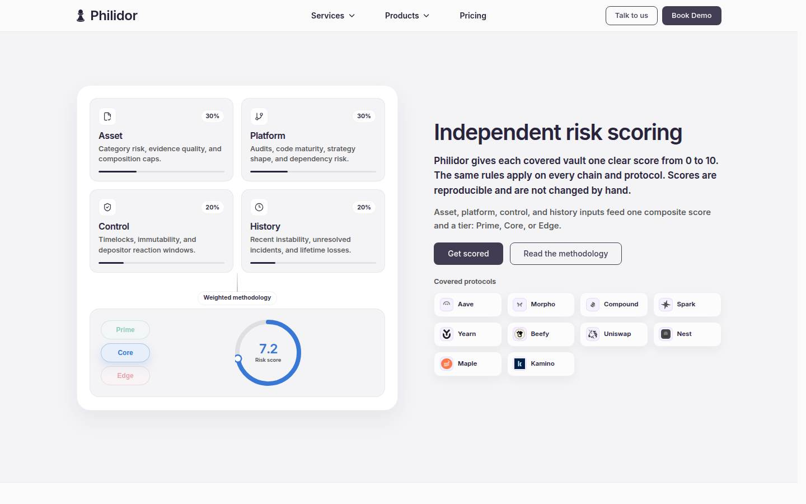

P
P
Philidor
Institutional-grade DeFi vault risk assessment and curation platform.
Why I built it
TODO
Why I built it is not stated in this portfolio or on the product site. Replace this note with the problem and the motivation.
Role
Founder of the institutional DeFi layer focusing on transparent security and risk analysis
What it does
Institutional-grade DeFi vault risk assessment and curation platform.
The site says Philidor scores and monitors vaults and tokenized funds, maps what each product depends on, and issues signed risk decisions under your policy, with an open methodology, dashboards, and APIs for institutional allocators.
The homepage shows 1000+ vaults scored, 450+ assets covered, 13 protocol modules, and 12 chains. It describes one score from 0 to 10 for each covered vault, with tiers Prime, Core, and Edge, and says scores are reproducible and are not changed by hand.
Key features
- Vault and tokenized-fund scoring and monitoring
- Dependency mapping
- Signed risk decisions under a policy
- Dashboards, a public API, and MCP for agents
What was implemented
- Monorepo (Turbo): landing, app, analytics, API, MCP, indexer
- REST API (Hono) — single backend for all clients
- On-chain indexer (sync, events, risk scores)
- MCP server for AI agents (vault search, risk breakdown)
- PostgreSQL (TimescaleDB), Redis (rate limit + cache)
- Vercel (frontends + MCP), VPS (API + indexer)
Stack
Third-party services and APIs
Gallery


